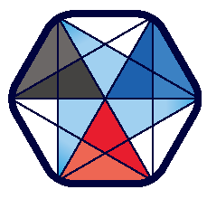

<div class="grid-wrapper-nav">
  <ag-grid-angular class="ag-theme-material" [rowData]="views" [modules]="modules" [gridOptions]="gridOptions">
  </ag-grid-angular>

  <div>
    <button mat-button matTooltip="Configure Polymorphism" (click)="editPolymorphisms()">
      <!-- todo: would be nice if we had a raw-loader to include the right logo  -->
      <mat-icon>layers</mat-icon>
      Polymorphism
      {{ polymorphism?.Id === null
        ? "not configured"
        : ( polymorphism.Resolver === null ? "disabled" : "using " + polymorphism.Resolver )
      }}
    </button>
  </div>

  <button mat-fab mat-elevation-z24 class="grid-fab" matTooltip="Create a new view" (click)="editView(null)">
    <mat-icon>add</mat-icon>
  </button>
</div>
